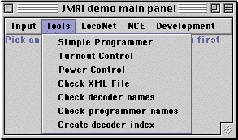

The JMRI project is building tools for model railroad computer control. We
want it to be usable to as many people as possible, so we're building it
in Java to run anywhere, and we're trying to make it independent of specific
hardware systems.
Like the CMRI system before it, JMRI is intended as a jumping-off point for
hobbyists who want to control their layouts from a computer without having to
create an entire system from scratch.
To do this, we've split the problem into two parts with an interface in-between:
"Below" the interface lies code that connects to specific layout hardware. Our initial
work was with Digitrax® systems, as they provide a lot of functionality already
and really good support is available. We also connect to NCE PowerHouse systems, providing
the full functionality. We are certainly interested in connecting to other systems.
"Above" the interface are the cool tools that people want. Our first examples are
programmers for DCC decoders and simple layout controls. The hope is that we can develop
better and better tools that still will work on lots of type of computers, with lots
of types of layouts.
The long-term strategy is to:
Create a set of publically available common interfaces for model railroad control code, suitable
for use with any type of layout, from any type of computer.
Demonstrate the technical feasibility of these interfaces with initial DCC-based implementations.
Encourage interoperability of layout hardware and software through the use of common interfaces.
In the short term, we've created a demo version that can
communicate with either a Digitrax LocoNet or an NCE command station
to control and display
turnout positions, and to program decoders. Its rough, but its a start.

JMRI also provides
LocoNet-specific tools
for monitoring of the LocoNet and the command station slots, and also for sending user-defined
packets.
The JMRI libraries also form the basis of
DecoderPro, a better tool for programming decoders, which we
we're trying to adapt to many types of decoders. Development versions are available for
download, please see the
DecoderPro README file
for additional information on how to install. We welcome feedback!
If you're interested in using it with other model railroad equipment, with or without DCC, please
join in the effort.
The JMRI name is chosen to bring to mind a "Java model railroad interface", but
to comply with the Sun licensing policy JMRI is not an acronym.
Demos
JMRI is an open-source project, so you can get the entire source code at any time
via the Project page. If you'd
like to download the complete libraries, including a running demo, we have the most recent
one (version 0.9) available packaged in several forms:
JMRI.0.9.hqx A binhex'd self-extracting archive for the Macintosh
JMRI.0.9.zip A .zip file for OS/2, Windows 95, 98 and perhaps others
You should read the
JMRI README page
for details on what layout hardware will work, what you'll need to connect, and instructions on how
to download, install and run the program.
There are also free versions available for the Decoder Pro program, see the
Decoder Pro
README page
for more links to download, instructions, etc.
Note that the people working on this project are really short of expertise
in Windows and Linux; project development has primarily been on the Macintosh.
Only the Macintosh version is packaged so you can just click on the icon to start it; see
the README file for details of how to start the others.
If you can help us package any of these better, we'd really appreciate your
advice.
The
README file
from the latest version is also available separately.
How can you use this?
There are several different ways to use JMRI:
Use
DecoderPro to configure your locomotive decoders and
keep a roster.
You can just run the demo and use the tools it provides. As we
add more and more, the demo becomes more useful. But you shouldn't expect
it to be as powerful as a commercial layout management program; JMRI
isn't meant to compete directly with them.
You can use the JRMI interfaces to write programs for your own layouts.
Making this easy is an important goal.
You can write new general-purpose tools. Although this is a little
harder than writing automation for your own layout, writing tools that other
people use can be very satisfying.
You can implement the JMRI interfaces for a new system. We've done
LocoNet and NCE, but having JMRI work with other systems is an important goal.
Once an implementation for another system works, the general tools (e.g.
symbolic programmer, automations tools, signalling, etc) can be immediately
used.
Further information
The jmri-announce
mailing list carries announcements of new versions, major changes, etc.
This list is intended to be very low traffic; discussions, etc, should take place elsewhere.
You can subscribe
by sending the word "subscribe" in the subject or body of an email to
jmri-announce-request@lists.sourceforge.net.
We have a "JMRI users" Yahoo group for general discussion. If you want to ask a question, get some
help, or suggest some improvement, that discussion group is a good place. You can
subscribe, browse posts, etc, at
http://groups.yahoo.com/group/jmriusers/.
Sourceforge is providing tools to help us solve problems, track bugs, etc. If you'd like
to browse the existing problems, or perhaps ask for help on a new one, please follow one of the
following links:
JMRI connects to a LocoNet via a Digitrax MS100 adapter or a LocoBuffer.
NCE command stations connect directly to a serial port. For more information,
please see the README files for
DecoderPro
or the
JMRI libraries.
The demo is developed on a USB Macintosh, which is interfaced to a layout and LocoNet via
a Keyspan PDA Adapter, DB9 to DB25 cable, and a Digitrax MS100 and/or LocoBuffer. The
Keyspan PDA adapter also works for connecting to the NCE command station.
PCs with a RS232 port should be able to connect directly to the MS100 with an appropriate cable,
but some are not able to run at the LocoNet's non-standard baud rate.
Java-specific information
JMRI is written entirely in Java. Some day, that means it will be "run anywhere",
but we're not there yet.
Installing Java: Many computers come with a usable version of Java already installed. If
your's doesn't have one, try this page for some advice.
Digitrax-specific information
As a convenience for people using JRMI with Digitrax systems, we've got a directory of
Digitrax-specific information:
The source tree is available via anonymous CVS at:
anonymous@cvs.jmri.sourceforge.net:/cvsroot/jmri
If you have problems accessing that, please check for scheduled outages on the
SourceForge status page
This is still an early stage, and we're critically short of documentation. But if you're interested
in working with the code, we'd love to help you get started via email, etc.
Acknowledgements
JMRI is a volunteer project, and we welcome people to contribute in any way.
Contributors include:
Debbie Ames of Lenz USA, who has provided valuable information on the
Lenz decoders and loaned equipment for testing
Patrick Beard, who allows us to distribute his javax.comm.MRJ package for the Macintosh
Thomas Beutel, who helped with the early EasyDCC tests
Mike Davison, who got the Linux serial connection working with Java 1.4,
has helped with the EasyDCC code, and helped debug the Ant compilation process
Joseph Goldstone, who put together the javax.comm implementation for Mac OS X
Walter Griffin provided graphics for signals and CTC panels
Phil Hartung, who provided some CTC graphics
John Jabour, who created the LocoBuffer and thereby made reliable LocoNet communications routine
The good people at MindVision, who are letting us use their excellant Installer Vise
to build our Windows installer
Jim Scorse, who gave generously of his time to answer questions about NCE details
Alex Shepherd, who helped move development to JBuilder, a much better tool, and
created the client/server implementation for LocoNet
Jim Wells, who created our logos
Many more people
have contributed, and we thank
all of them.
Site hosted by:
Bob Jacobsen
jake@physics.berkeley.edu